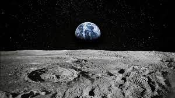
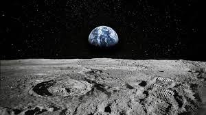

Bienvenue chez MoonBite, le fast-food américain qui ramène un peu de chez soi sur la Lune! Implanté sur notre satellite depuis plusieurs décennies, MoonBite est le lieu de prédilection des résidents lunaires et des voyageurs interstellaires en quête d'une touche familière de saveurs américaines. Inspiré par les classiques des fast-foods de la Terre, notre menu propose une sélection alléchante de hamburgers juteux, de hot dogs chargés, de frites dorées et de milk-shakes crémeux, tous préparés avec des ingrédients soigneusement sélectionnés pour apporter un goût authentique à chaque bouchée. Chez MoonBite, nous comprenons que l'éloignement de la Terre peut engendrer une certaine nostalgie pour les saveurs familières qui nous manquent sur la Lune. C'est pourquoi nous nous efforçons de recréer ces délices culinaires avec une attention méticuleuse aux détails, en veillant à ce que chaque plat évoque des souvenirs chaleureux de chez soi. De la sauce secrète de nos hamburgers aux assaisonnements spéciaux de nos frites, chaque élément de notre menu est conçu pour raviver les papilles gustatives et apporter un réconfort bienvenu dans l'espace. Que vous soyez un astronaute en mission longue durée ou un colon résidant sur la Lune, MoonBite est là pour combler votre appétit et apaiser votre nostalgie avec des saveurs authentiques de fast-food américain. Rejoignez-nous pour une expérience culinaire qui vous ramène instantanément chez vous, même à des millions de kilomètres de distance!


MoonBite
"Citation du restaurant"
MoonWok
Bienvenue chez MoonWok, l'expérience gastronomique asiatique ultime sur la Lune! Niché au cœur de notre colonie lunaire, MoonWok vous invite à un voyage culinaire exotique où les saveurs de l'Asie rencontrent le mystère de l'espace. Inspiré par les traditions culinaires anciennes de l'Extrême-Orient, notre restaurant offre un éventail captivant de plats authentiques, allant des délices épicés de la cuisine chinoise aux arômes délicats de la cuisine japonaise, en passant par les saveurs exotiques de la cuisine thaïlandaise et bien plus encore. Chez MoonWok, chaque plat est préparé avec des ingrédients frais et des techniques de cuisson traditionnelles, garantissant une expérience gustative inégalée qui éveille les sens et ravit les palais. Que vous soyez un amateur de sushi, un passionné de curry ou un adepte des nouilles sautées, notre menu diversifié saura combler toutes vos envies culinaires avec une touche de flair lunaire. En plus de notre délicieuse cuisine, l'ambiance envoûtante de MoonWok vous transporte dans un autre monde, où les lumières tamisées et la musique d'ambiance créent une atmosphère de sérénité et d'émerveillement. Que ce soit pour une soirée romantique sous les étoiles ou un dîner en famille dans un cadre unique, MoonWok promet une expérience culinaire mémorable qui vous transporte au-delà des frontières de l'espace et du temps. Rejoignez-nous pour un festin céleste chez MoonWok, où les saveurs de l'Asie rencontrent la magie de la Lune!
"Citation du restaurant 2"
Lunar Delights
Bienvenue chez Lunar Delights, le premier restaurant de spécialités lunaires de notre satellite bien-aimé! Situé au cœur de notre colonie lunaire, Lunar Delights vous invite à découvrir une cuisine unique et innovante inspirée par les mystères et les merveilles de la Lune elle-même. Notre menu exclusif propose une sélection exquise de plats créatifs, élaborés à partir d'ingrédients lunaires soigneusement sélectionnés pour offrir une expérience gastronomique véritablement transcendante. Dégustez des mets extraordinaires tels que le fromage de roche lunaire fondant, les cratères de caviar d'algues et les brochettes de poulet marinées dans une sauce stellaire à base de poussière lunaire. Laissez-vous séduire par des desserts lunaires exquis, comme notre soufflé de lune au chocolat ou nos boules de glace à la vanille lunaire, inspirées par les cratères glacés de notre satellite enchanté. Chez Lunar Delights, chaque repas est une aventure culinaire, où les saveurs uniques de la Lune fusionnent avec l'imagination sans limites de notre équipe de chefs talentueux. Que vous soyez un astronaute en mission spatiale ou un habitant de longue date de notre colonie lunaire, Lunar Delights promet une expérience gastronomique inoubliable qui repousse les frontières de la cuisine traditionnelle et vous transporte dans un monde de délices lunaires. Rejoignez-nous pour un festin céleste chez Lunar Delights, où chaque bouchée est une ode à l'émerveillement et à la découverte!
"Citation du restaurant 3"
Rocket Rest
Bienvenue à Rocket Rest, l'ultime expérience d'hébergement sur la Lune! Niché au cœur de notre colonie lunaire, Rocket Rest offre une expérience d'hébergement unique en son genre, où vous pouvez dormir dans le confort de véritables capsules spatiales inspirées des fusées qui ont jadis sillonné l'espace. Chaque capsule est conçue pour vous offrir un séjour confortable et sécurisé, avec des aménagements modernes et des vues spectaculaires sur le paysage lunaire environnant. Imprégnez-vous de l'ambiance futuriste alors que vous vous détendez dans votre propre espace privé, avec tout le confort nécessaire pour une nuit de sommeil réparateur après une journée d'aventure sur la Lune. Que vous soyez un astronaute en mission spatiale ou un touriste en quête d'une expérience unique, Rocket Rest vous promet une expérience d'hébergement inoubliable qui vous transporte au-delà des étoiles. Rejoignez-nous pour une nuit sous les cieux lunaires chez Rocket Rest, où chaque séjour est une escapade vers l'inconnu et une exploration de l'espace infini!
"Citation de l'hotel 1"
Blune
Bienvenue à Blune, l'expérience d'hébergement ultime sur la Lune! Niché au cœur de notre colonie lunaire, Blune offre un refuge luxueux et futuriste, où vous pouvez vous détendre et vous ressourcer dans des dômes spatiaux élégants et confortables. Nos dômes sont conçus pour offrir un mélange parfait d'esthétique contemporaine et de fonctionnalité, avec des aménagements modernes et des équipements de pointe pour assurer un séjour confortable et relaxant. Chaque dôme offre une vue imprenable sur le paysage lunaire environnant, vous permettant d'admirer les étoiles scintillantes et les cratères mystérieux depuis le confort de votre propre espace privé. Que vous soyez un astronaute en mission spatiale ou un voyageur en quête d'une expérience unique, Blune vous promet une escapade inoubliable qui repousse les frontières de l'hospitalité terrestre. Rejoignez-nous pour une expérience de séjour transcendante chez Blune, où chaque moment est une aventure dans l'espace et une célébration de la vie sur la Lune!
"Citation de l'Hotel 2"
F1 Lune
Bienvenue chez F1 Lune, l'hôtel Formule 1 de choix sur la Lune! Fidèle à l'esprit de la célèbre chaîne d'hôtels économiques, F1 Lune offre un hébergement pratique et abordable pour les voyageurs à la recherche d'une expérience lunaire inoubliable. Nos chambres simples mais confortables sont équipées de tout ce dont vous avez besoin pour un séjour agréable, y compris des lits confortables, des douches rafraîchissantes et un accès Wi-Fi gratuit. Situé au cœur de notre colonie lunaire, LunarSpeed vous offre un point de départ idéal pour explorer les merveilles de la Lune. Que vous soyez un astronaute en mission spatiale ou un touriste en quête d'aventure, F1 Lune vous offre un hébergement de qualité à un prix abordable. Rejoignez-nous pour une expérience de séjour pratique et confortable chez F1 Lune, où le confort ne fait pas défaut, même à des millions de kilomètres de la Terre!
"Citation de l'hotel 3"
Parc Lunaire Spectaculaire
Bienvenue au Parc Lunaire Spectaculaire, où vos rêves de découverte spatiale et d'aventure deviennent réalité! Niché sur la surface tranquille de la lune, notre parc d'attractions offre une expérience extraordinaire à tous les visiteurs intrépides. Explorez nos attractions uniques, depuis les montagnes russes à gravité zéro jusqu'aux simulations de promenades en rover lunaire à travers les cratères majestueux. Admirez la vue imprenable sur la Terre depuis notre tour d'observation lunaire, ou défiez vos amis dans des jeux de laser tag sous le clair de lune. Pour les amateurs de science, ne manquez pas nos expositions interactives sur l'astronomie et l'exploration spatiale, où vous pourrez en apprendre davantage sur les mystères fascinants de notre univers. Que vous soyez un astronaute chevronné ou un amateur d'aventure en herbe, le Parc Lunaire Spectaculaire offre une expérience inoubliable pour tous les âges. Rejoignez-nous pour une escapade cosmique et créez des souvenirs qui dureront toute une vie !
"Citation de l'activite 1"
Rover lunaire
Découvrez l'excitation de l'exploration lunaire avec notre incroyable activité de balade en Rover lunaire! Située sur la surface éclatante de la Lune, cette expérience inoubliable vous emmène à travers des paysages lunaires à couper le souffle, où chaque cratère et chaque montagne racontent une histoire de l'espace. Conduisez votre Rover spécialisé, équipé pour l'aventure extraterrestre, et admirez les vues spectaculaires du cosmos environnant. Que vous soyez un passionné d'astronomie ou un amateur d'aventure, cette excursion garantit des souvenirs lunaires pour toute une vie. Préparez-vous à vivre une expérience hors du commun sur notre balade en Rover lunaire!
"Citation de l'activite 2"
Hammam ?
Explorez le summum du bien-être et de la relaxation cosmique avec notre activité de sources chaudes sur la Lune! Nichées au cœur des cratères lunaires, nos sources chaudes naturelles offrent une expérience de détente comme nulle part ailleurs dans l'univers. Immergez-vous dans les eaux thermales revitalisantes, imprégnées des minéraux lunaires rares pour apaiser votre corps et votre esprit. Laissez-vous emporter par la tranquillité absolue alors que vous contemplez le paysage lunaire à couper le souffle depuis nos installations confortables et sécurisées. Que vous soyez en quête de guérison physique ou de revitalisation mentale, nos sources chaudes lunaires vous promettent une évasion céleste inégalée. Préparez-vous à vous ressourcer dans l'atmosphère sereine de nos sources chaudes sur la Lune!
"Citation de l'activite 3"
ici les vues depuis la lune
 
